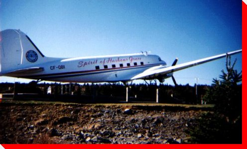

|
LARGE CANADIAN ROADSIDE ATTRACTIONS
PLANES ON PEDESTALS
|
|


"The Spirit of Harbour Grace" DC-3
Harbour Grace, Newfoundland
Location: Entrance of Harbour Grace
Manufacturer and Model: Douglas DC-3
Credit: Joan Russell.

Planes on Pedestals
Main
| By Location | By Type | Wanted Photos of Planes
Large Canadian Roadside Attractions